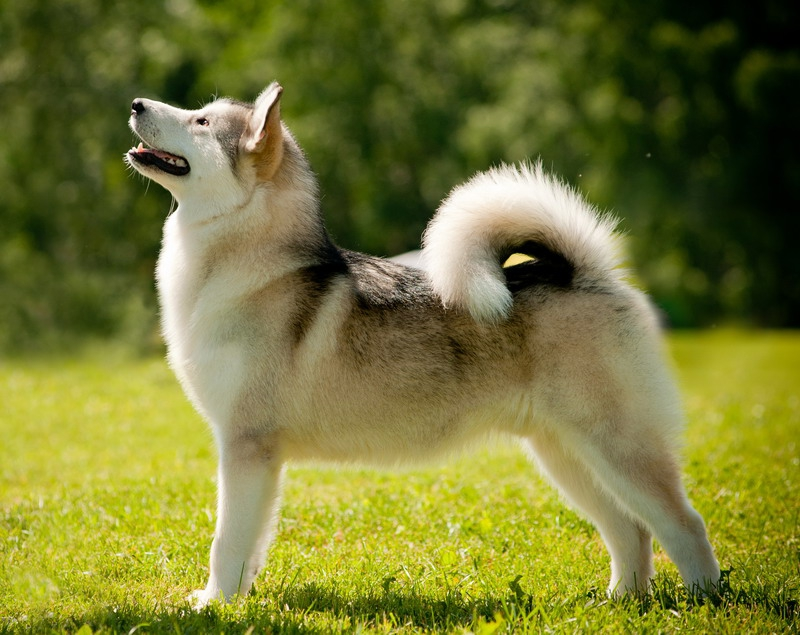
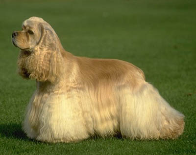
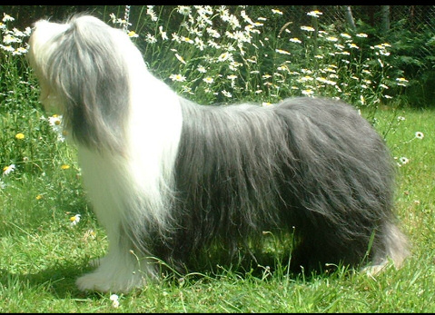
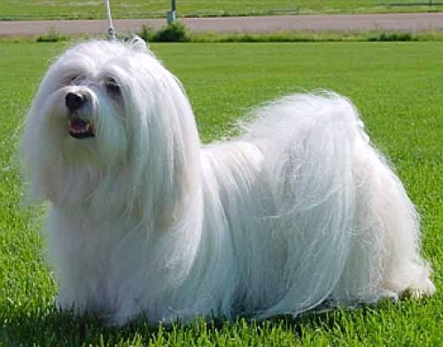
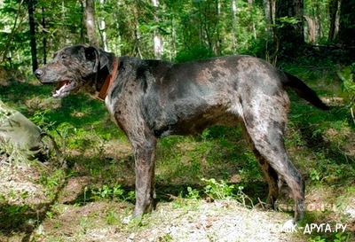
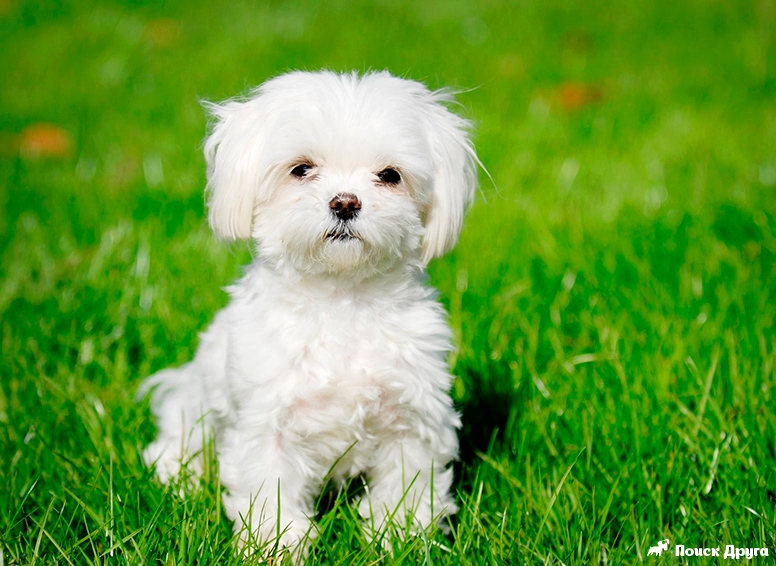
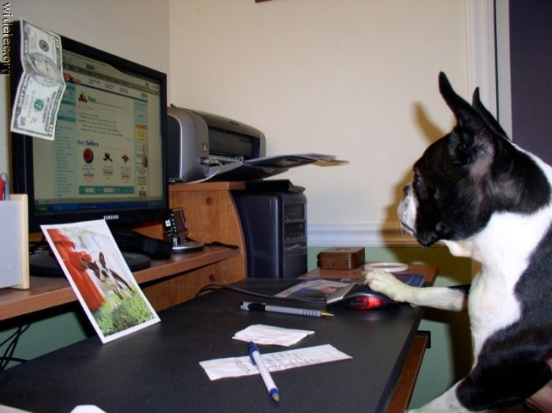
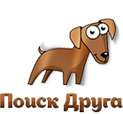

| Собачки | Собачки | И еще Собачки |
|---|---|---|
|  |  |  |
|  |  |  |  |
Эта собака появилась на Аляске около двух— трех тысяч лет назад. Считается, что предком аляскинского маламута был арктический волк, поэтому окрас шерсти у данной породы напоминает окрас волка — все оттенки серого, однако встречаются представители породы песочного, рыжего и даже белого цвета. Это очень красивая собака с хорошо развитой мускулатурой, обладающая атлетическим сложением, достаточно выносливая, что позволяет ей без усилий переносить на значительные расстояния тяжелые грузы. Крупные и мощные лапы с опущенными подушечками помогают аляскинскому маламуту уверенно, не проваливаясь, передвигаться по снегу, благодаря густому подшерстку и морозы ему не страшны. Представители этой породы энергичны, общительны, отличаются радушным характером, в то же время иногда могут проявлять упрямство, им не свойственно подчинение, в связи с этим уже в раннем детстве следует дать понять собаке, что вы — лидер. Маламуты обладают устойчивой психикой, не агрессивны, не могут напасть на человека, поэтому бессмысленно пытаться сделать из нее сторожа. Ухаживать за представителями этой породы довольно сложно: необходимо регулярно расчесывать густую шерсть собаки, следить за тем, чтобы она не перегревалась, в жаркие дни обеспечивать животное обильным питьем.
Произошедший от английского кокер-спаниеля, американский кокер-спаниель привлечет внимание тех, кто любит красивую длинную шерсть у собак и приплюснутую морду. В ранней биографии кокеров – удачная охота на вальдшнепов (отсюда и название, от «woodcock»). Современные любители собак обращают внимание на эту породу как на домашнего любимца с навыками охотника. Дрессировке американский кокер-спаниель подается легко, послушно выполняя все команды. Это необыкновенный лакомка, которого можно «купить» на кусочек любимой еды. Склонность к ожирению и прожорливость собаки требуют строгого контроля за количеством съеденного и достаточных физических нагрузок. Но американский кокер-спаниель и так очень подвижен. Его веселый характер, доброта делают из него приятного компаньона как для взрослых, так и для детей. Резвиться с детишками – одно из любимых занятий кокер-спаниеля. Собаки этой породы требуют особого воспитания с учетом их доброжелательности ко всем людям без исключения и стремления к общению. Приветливая мордашка, всегда подвижный озорной хвост американского кокер-спаниеля сведут с ума любого, кто желает получить приятного спутника, верного товарища. Только для него необходимы частое купание и чистка богатой шерсти.
Бородатая колли или, как её ещё называют, бирдед колли – одна из представителей семьи шотландских овчарок. Происхождение современной бородатой колли теряется где-то в глубине веков. Бытует мнение, что родиной всех пастушьих собак является Центральная Азия. Согласно этой версии собаки вместе с кочевыми племенами перемещались на запад, охраняя скот и караваны. По всему миру встречаются косматые овчарки, главным образом в горных местностях с суровыми зимами. Во Франции была выведена пиренейская овчарка и бриар, в Испании – косматые овчарки Гос д'Атура, в Голландии – скапендус, на юге России – южнорусская овчарка. Существуют и другие подобные породы. Все они в той или иной степени являются родственными, но нельзя с уверенностью утверждать, что какая-то из них является прародителем другой. Главной отличительной чертой бородатой колли является длинная косматая шерсть, образующая на морде бороду и усы. В последнее время собаки этой породы приобретают популярность во всём мире, их содержат в качестве собак-компаньонов. Популярность породы объясняется красивой внешностью и хорошим характером. Бородатая колли легко обучается, тактична в поведении не только с людьми, но и с животными. В доме эта собака ничего не испортит, а на улице будет с большим удовольствием резвиться, однако повинуется первому зову хозяина. Бирдед колли прекрасно ладит с детьми, никогда не позволит себе грубости по отношению к ним. Пастушьи качества собаки проявляются, даже если ей не приходится пасти скот. Колли старается собрать вместе всех членов семьи и их знакомых, внимательно следит, чтобы никто не отстал и не потерялся. Длинная шерсть собаки нуждается в ежедневном расчёсывании и уходе. В том случае, если вы собираетесь выставлять собаку, то можно периодически подстригать шерсть.
Порода гаванских бишонов была выведена, вероятнее всего, в результате скрещивания мальтийских болонок и болонских бишонов. Их родиной считается Куба, куда они попали с испанскими переселенцами. Здесь гаванезы (так еще называют гаванских бишонов), пользовались огромной полярностью у местной аристократии. К началу двадцатого столетия порода пережила кризис, однако, сохранилась благодаря любителям из США, ставшим вновь активно ее разводить. К концу XX века гаванский бишон был привезен в Европу, где сразу обрел своих поклонников и стал участником всех собачьих выставок. Это животное, похожее на пуховку для пудры, отличается открытым характером. Он без труда поддается дрессировке и почти всегда готов к игре, необыкновенно ласков с детьми. Гаванез сильно привязывается к хозяевам, стремится везде сопровождать их. На похвалы в свою сторону реагирует очень живо – прыгает и виляет хвостом. Если же хозяин повысит на питомца голос, то он, как создание чувствительное, может и обидеться. Гаванский бишон любит воду и отлично плавает. Несмотря на свой очаровательный вид, собака может выступать и хорошим сторожем: часто на Кубе ее использовали для охраны скота, поэтому она с удовольствием охраняет свое «стадо» и сразу громким лаем дает знать о появлении постороннего на ее территории. В случае опасности гаванез, не колеблясь, проявляет бесстрашие и решительность.
Катахула – порода редкая и весьма оригинальная, получила прозвище «собака-свинарка» и признана официальным символом штата Луизиана (США). Выведена эта порода в Америке, а своё название получила в честь округа в штате Луизиана и именно там собака получила наибольшее распространение. За пределами штата катахула практически не известна. Раньше этих собак использовали для выпаса полудиких свиней, поэтому катахула и получили своё прозвище. Сегодня представители данной породы помогают пасти овец, домашних свиней, крупный рогатый скот. Также этих собак можно использовать для охраны дома. Для этих собак характерна интересная особенность – почти белые глаза. Особой ценностью пользуются собаки с бирюзовыми глазами. Шерсть у катахулы короткая, блестящая и густая, не требующая особого ухода. Окрас у этих собак серо-голубой, может быть одноцветным, либо с пятнами рыжего, жёлтого или чёрного цветов. Катахулы отличаются большой сообразительностью, преданностью и верностью. Эти животные всегда готовы защищать своего хозяина несмотря ни на что. Прекрасно поддаются обучению, лояльны по отношению к окружающим, терпеливы, собаки-собственники могут быть очень ревнивыми, не терпят грубости по отношению к себе.
Это маленькое, избалованное и капризное, всеядное создание непременно становится всеобщей любимицей в любом доме. Не то кукла, не то белая и пушистая игрушка, похожая на крупного котенка, эта декоративная собачка не смотря на всю свою изнеженность, очень неприхотливая и непривередливая. Содержать ее в доме совсем не сложно: она ласкова и терпелива, никогда не станет досаждать вам своими требованиями ласки или внимания. Мальтийская болонка может играть с детьми, а может их просто игнорировать – все зависит от ее настроения в данный момент. Когда говорят: «Маленькая собачка до старости щенок», наверняка имеют в виду болонку, которая всю жизнь остается жизнерадостной и необычайно подвижной. Она может до бесконечности возиться с игрушками, волчком носиться по комнате, суетиться, подпрыгивать за любым предметом и так далее. Все ее шалости и проказы неизменно сходят ей с рук. А ее настроение можно легко определить по ее удивительно выразительным и «умным» глазам.
Все изображения и описания собак взяты с сайта:
